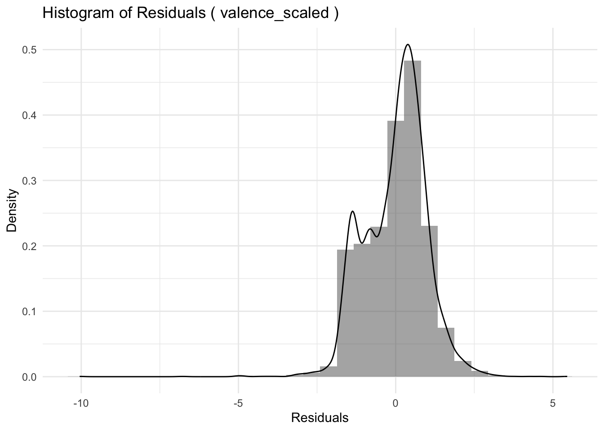
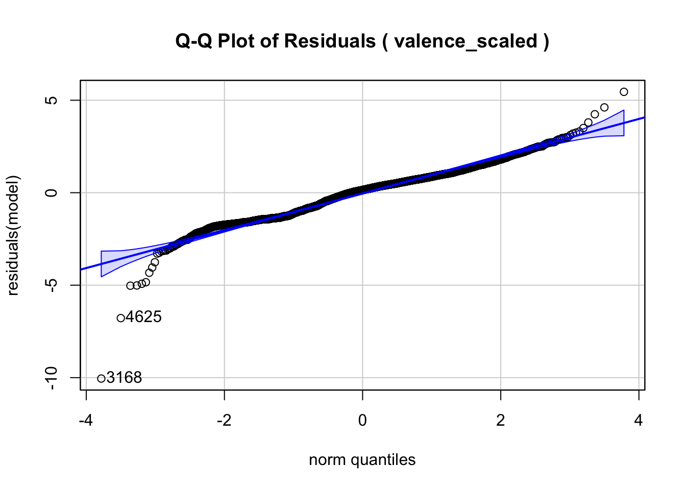
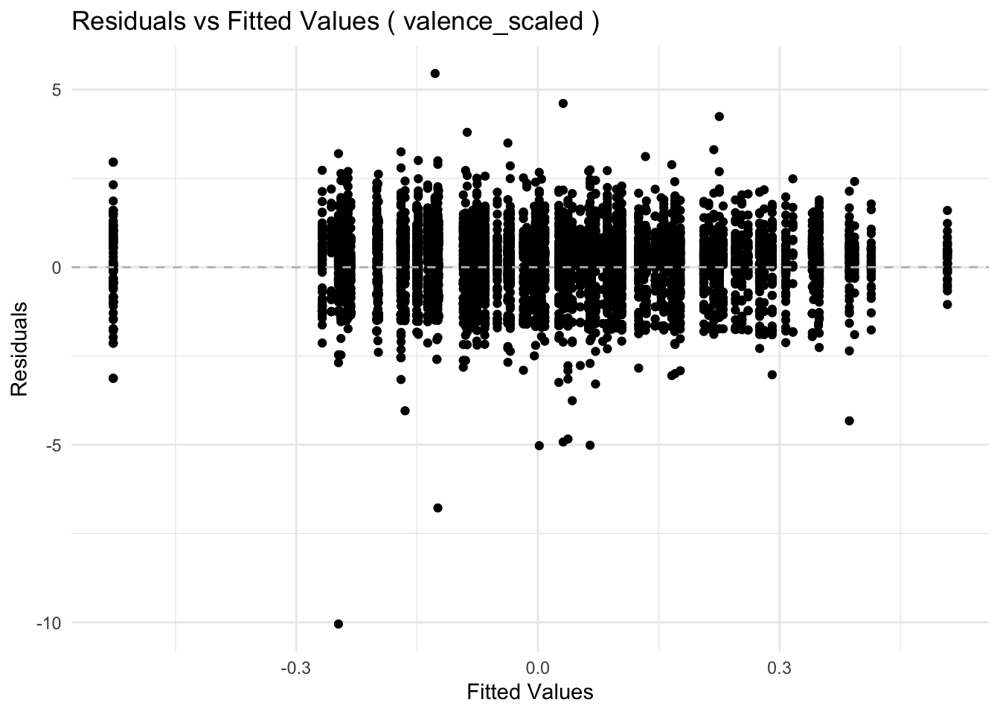

# Load required packages
library(tidyverse)── Attaching core tidyverse packages ──────────────────────── tidyverse 2.0.0 ──
✔ dplyr 1.1.4 ✔ readr 2.1.5
✔ forcats 1.0.0 ✔ stringr 1.5.1
✔ ggplot2 3.5.1 ✔ tibble 3.2.1
✔ lubridate 1.9.4 ✔ tidyr 1.3.1
✔ purrr 1.0.2
── Conflicts ────────────────────────────────────────── tidyverse_conflicts() ──
✖ dplyr::filter() masks stats::filter()
✖ dplyr::lag() masks stats::lag()
ℹ Use the conflicted package (<http://conflicted.r-lib.org/>) to force all conflicts to become errorslibrary(ggplot2)
library(lme4)Loading required package: Matrix
Attaching package: 'Matrix'
The following objects are masked from 'package:tidyr':
expand, pack, unpacklibrary(lmerTest)
Attaching package: 'lmerTest'
The following object is masked from 'package:lme4':
lmer
The following object is masked from 'package:stats':
steplibrary(car)Loading required package: carData
Attaching package: 'car'
The following object is masked from 'package:dplyr':
recode
The following object is masked from 'package:purrr':
some# Read and clean data
df <- read.csv('data/psyc259_finalproject_data.csv')
# Remove rows with missing values
# original_length <- nrow(df)
df <- na.omit(df)
# cat("rows dropped: ", original_length - nrow(df), "\n")
# Create a participant ID by combining transcript and speaker
df$participant_id <- paste(df$transcript, df$speaker, sep = "_")
# Scale predictors of interest
df$rationality_scaled <- scale(df$rationality)
df$social_impact_scaled <- scale(df$social_impact)
df$valence_scaled <- scale(df$valence)
# Compute correlation among predictors of interest
# correlation_matrix <- cor(df[,c('rationality_scaled', 'social_impact_scaled', 'valence_scaled')])
# print(correlation_matrix)
# Plot distributions by condition
# for (col in c("rationality_scaled", "social_impact_scaled", # "valence_scaled")) {
# p <- ggplot(df, aes_string(x = col, fill = "condition")) +
# geom_histogram(bins = 30, alpha = 0.5, position = "identity" ) +
# geom_density(aes(y = ..density..), alpha = 0.7) +
# facet_wrap(~ condition) +
# labs(
# title = paste("distribution of", col, "by condition"),
# x = col,
# y = "density"
# ) +
# theme_minimal()
# print(p)
# }
# Function to fit multilevel models
# 1) Encodes the empathy condition as a binary variable
# 2) Fits a random-intercept model by participant_id
# 3) Prints the model summary
fit_multilevel_model <- function(df, dependent_var) {
# Convert participant_id to factor
df <- df %>%
mutate(
participant_id = factor(participant_id),
empathy_condition = ifelse(condition == "empathy", 1, 0)
)
model_formula <- as.formula(paste(dependent_var, "~ empathy_condition + (1|participant_id)"))
model <- lmer(model_formula, data = df)
cat("Model for:", dependent_var, "\n")
print(summary(model))
return(model)
}
# Function for residual diagnostics
# 1) Creates histograms of residuals
# 2) Creates Q-Q plots
# 3) Plots residuals vs. fitted values
analyze_residuals <- function(df, dependent_var, model) {
# Extract residuals and fitted values
residuals_df <- data.frame(
residuals = residuals(model),
fitted_values = fitted(model)
)
# Histogram of residuals
p1 <- ggplot(residuals_df, aes(x = residuals)) +
geom_histogram(aes(y = ..density..), bins = 30, alpha = 0.5) +
geom_density(alpha = 0.7) +
labs(
title = paste("Histogram of Residuals (", dependent_var, ")"),
x = "Residuals",
y = "Density"
) +
theme_minimal()
print(p1)
# Q-Q Plot of residuals
qqPlot(residuals(model), main = paste("Q-Q Plot of Residuals (", dependent_var, ")"))
# Residuals vs Fitted Values
p2 <- ggplot(residuals_df, aes(x = fitted_values, y = residuals)) +
geom_point() +
geom_hline(yintercept = 0, linetype = "dashed", color = "gray") +
labs(
title = paste("Residuals vs Fitted Values (", dependent_var, ")"),
x = "Fitted Values",
y = "Residuals"
) +
theme_minimal()
print(p2)
}
# Main loop: Fit each model and visualize diagnostics
#for (dependent_var in c("rationality_scaled", "social_impact_scaled", "valence_scaled")) {
# Fit model
# result <- fit_multilevel_model(df, dependent_var)
# Residual diagnostics
# analyze_residuals(df, dependent_var, result)
#}
# 1) Fit the multilevel model for valence
fit_multilevel_model(df, "valence_scaled")Model for: valence_scaled
Linear mixed model fit by REML. t-tests use Satterthwaite's method [
lmerModLmerTest]
Formula: model_formula
Data: df
REML criterion at convergence: 18159.3
Scaled residuals:
Min 1Q Median 3Q Max
-10.2771 -0.7364 0.1426 0.6545 5.5783
Random effects:
Groups Name Variance Std.Dev.
participant_id (Intercept) 0.04622 0.2150
Residual 0.95626 0.9779
Number of obs: 6452, groups: participant_id, 92
Fixed effects:
Estimate Std. Error df t value Pr(>|t|)
(Intercept) -0.01166 0.03719 78.30391 -0.313 0.7548
empathy_condition 0.11216 0.05205 81.84396 2.155 0.0341 *
---
Signif. codes: 0 '***' 0.001 '**' 0.01 '*' 0.05 '.' 0.1 ' ' 1
Correlation of Fixed Effects:
(Intr)
empthy_cndt -0.715Linear mixed model fit by REML ['lmerModLmerTest']
Formula: model_formula
Data: df
REML criterion at convergence: 18159.35
Random effects:
Groups Name Std.Dev.
participant_id (Intercept) 0.2150
Residual 0.9779
Number of obs: 6452, groups: participant_id, 92
Fixed Effects:
(Intercept) empathy_condition
-0.01166 0.11216 # 2) Perform residual diagnostics
result <- fit_multilevel_model(df, "valence_scaled")Model for: valence_scaled
Linear mixed model fit by REML. t-tests use Satterthwaite's method [
lmerModLmerTest]
Formula: model_formula
Data: df
REML criterion at convergence: 18159.3
Scaled residuals:
Min 1Q Median 3Q Max
-10.2771 -0.7364 0.1426 0.6545 5.5783
Random effects:
Groups Name Variance Std.Dev.
participant_id (Intercept) 0.04622 0.2150
Residual 0.95626 0.9779
Number of obs: 6452, groups: participant_id, 92
Fixed effects:
Estimate Std. Error df t value Pr(>|t|)
(Intercept) -0.01166 0.03719 78.30391 -0.313 0.7548
empathy_condition 0.11216 0.05205 81.84396 2.155 0.0341 *
---
Signif. codes: 0 '***' 0.001 '**' 0.01 '*' 0.05 '.' 0.1 ' ' 1
Correlation of Fixed Effects:
(Intr)
empthy_cndt -0.715analyze_residuals(df, "valence_scaled", result)Warning: The dot-dot notation (`..density..`) was deprecated in ggplot2 3.4.0.
ℹ Please use `after_stat(density)` instead.

